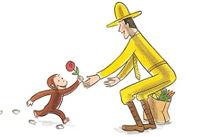

My goal is to enable robots to acquire an semantic understanding of the world independently through autonomous exploration.
To this end, I work on a combination of probabilistic modeling and robot vision.
Sum-Product Networks represent high-deminsional probablility distribution by a computational graph.
Place scans are the robo-centric view of the world.
We model the geometry and the semantics of places together by using the reconstructed occupancy map.
[2] K. Ariga, K. Zheng, and A. Pronobis. Probabilistic deep learning framework for semantic mapping with mobile robots. In Procecedings of the 10th Undergraduate Research Symposium, 2017.How can we make robots learn independently?
Autonomous exploration and pool-based active learning, where robots cleverly select a few samples from a pool of unlabeled data to ask humans for the ground truth label, seems to be a great match.